Guition ESP32 display boards
97 boards – ArtInChip D12x, ESP32, ESP32-C3, ESP32-P4, ESP32-S3, ESP32-S31, none (bare display). Filter and compare them in the interactive catalog →
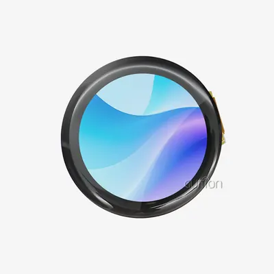
ESP32-2424S012C_I1.28" 240x240 IPS Capacitive touch · ESP32-C3 · 4MB flash, - PSRAM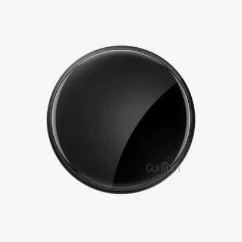
ESP32-2424S012C_I_Y(B)1.28" 240x240 IPS Capacitive touch · ESP32-C3 · 4MB flash, - PSRAM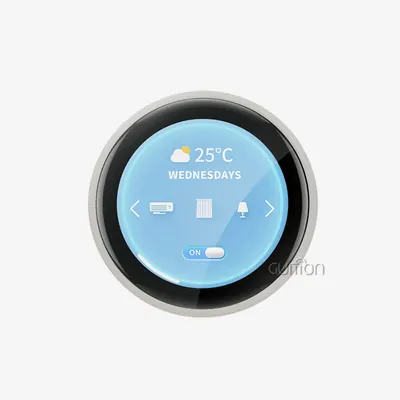
ESP32-2424S012C_I_Y(W)1.28" 240x240 IPS Capacitive touch · ESP32-C3 · 4MB flash, - PSRAM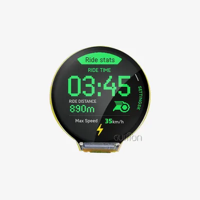
ESP32-2424S012N_I1.28" 240x240 IPS · ESP32-C3 · 4MB flash, - PSRAM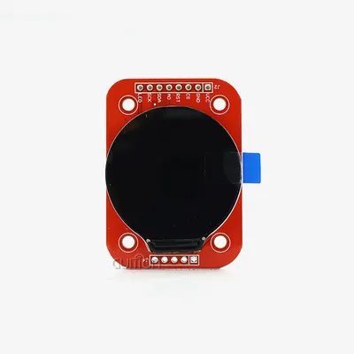
JC2424S012N_I1.28" 240x240 Resistive touch · none (bare display)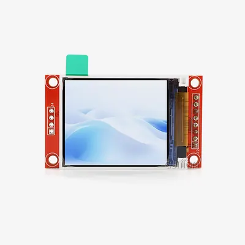
JC1216S018N1.8" 128x160 · none (bare display)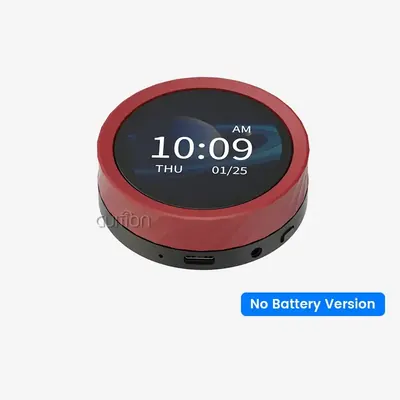
JC3636F118C_I_YR1.8" 360x360 IPS Capacitive touch · ESP32-S31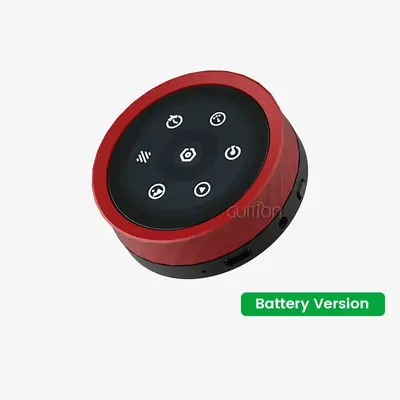
JC3636F118C_I_YR11.8" 360x360 IPS Capacitive touch · ESP32-S31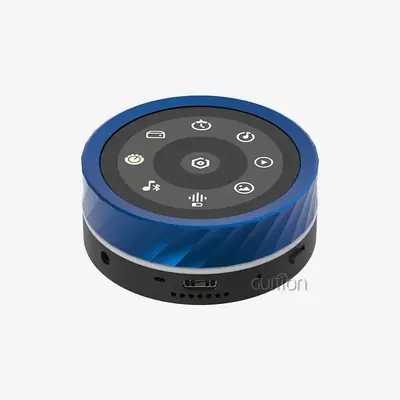
JC3636F318C_I_Y1(BU)1.8" 360x360 IPS Capacitive touch · ESP32-S31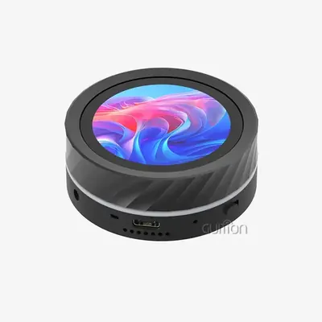
JC3636F318C_I_Y1(GY)1.8" 360x360 IPS Capacitive touch · ESP32-S31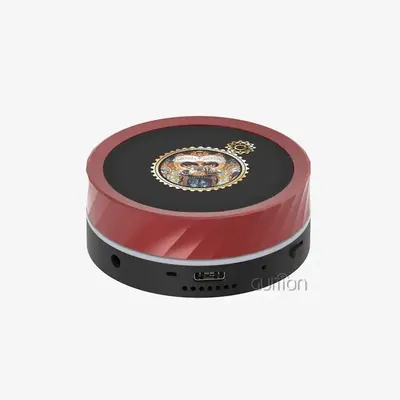
JC3636F318C_I_Y1(RD)1.8" 360x360 IPS Capacitive touch · ESP32-S31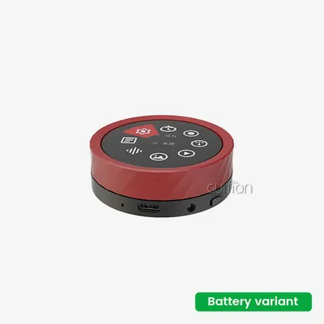
JC3636K518C_I_YR11.8" 360x360 IPS Capacitive touch · ESP32-S3 · 16MB flash, 8MB PSRAM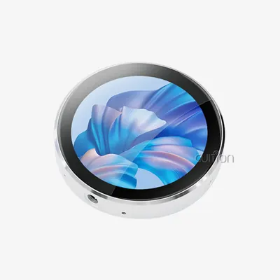
JC3636W518C_I_Y1.8" 360x360 IPS Capacitive touch · ESP32-S3 · 16MB flash, 8MB PSRAM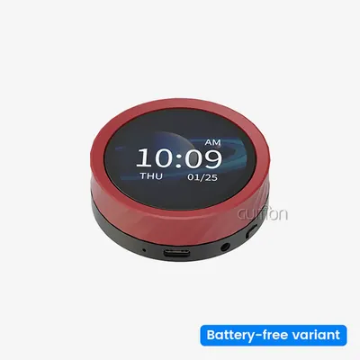
JC3636K518C_I_YR1.85" 360x360 IPS Capacitive touch · ESP32-S3 · 16MB flash, 8MB PSRAM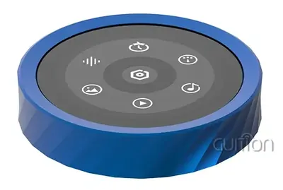
JC3636K718C_I(BU)1.85" 360x360 IPS Capacitive touch · ESP32-S3 · 16MB flash, 8MB PSRAM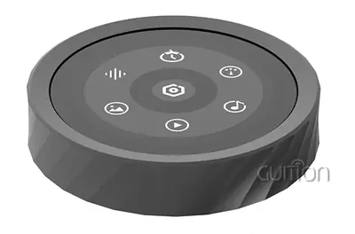
JC3636K718C_I(GY)1.85" 360x360 IPS Capacitive touch · ESP32-S3 · 16MB flash, 8MB PSRAM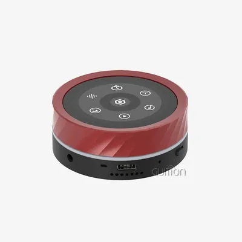
JC3636K718C_I(RD)1.85" 360x360 IPS Capacitive touch · ESP32-S3 · 16MB flash, 8MB PSRAM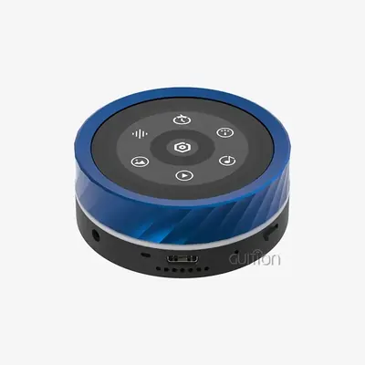
JC3636K718C_I_Y1(BU)1.85" 360x360 IPS Capacitive touch · ESP32-S3 · 16MB flash, 8MB PSRAM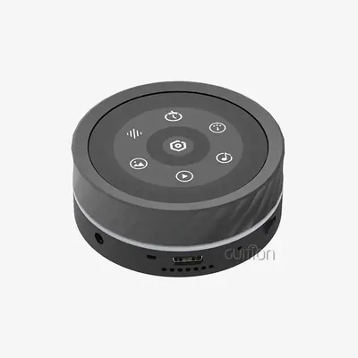
JC3636K718C_I_Y1(GY)1.85" 360x360 IPS Capacitive touch · ESP32-S3 · 16MB flash, 8MB PSRAM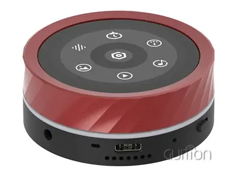
JC3636K718C_I_Y1(RD)1.85" 360x360 IPS Capacitive touch · ESP32-S3 · 16MB flash, 8MB PSRAM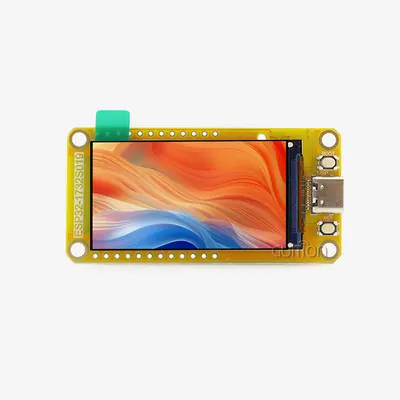
ESP32-1732S019N-I1.9" 170x320 IPS · ESP32-S3 · 16MB flash, 8MB PSRAM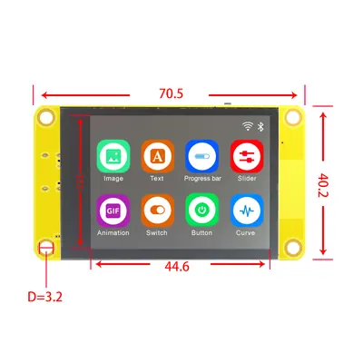
ESP32-2432S0222.2"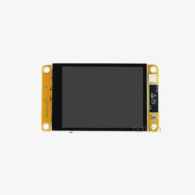
ESP32-2432S024C2.4" 240x320 TN Capacitive touch · ESP32 · 4MB flash, - PSRAM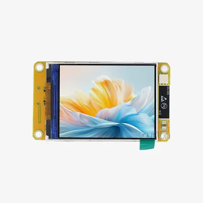
ESP32-2432S024N2.4" 240x320 TN · ESP32 · 4MB flash, - PSRAM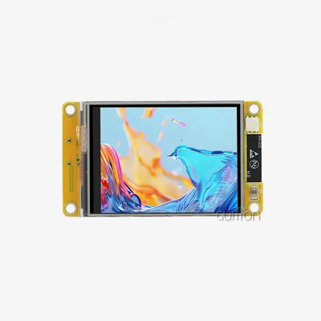
ESP32-2432S024R2.4" 240x320 TN Resistive touch · ESP32 · 4MB flash, - PSRAM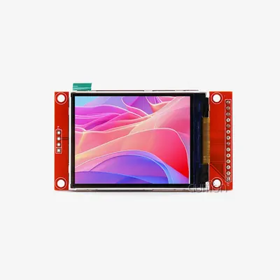
JC2432S024N2.4" 240x320 · none (bare display)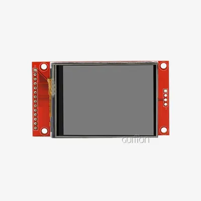
JC2432S024R2.4" 240x320 Resistive touch · none (bare display)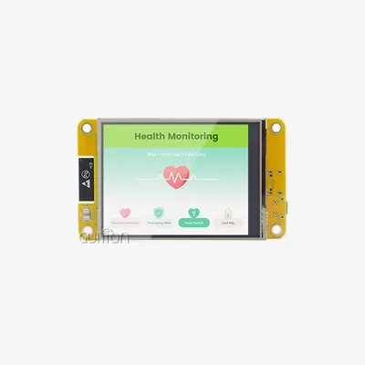
ESP32-2432S028R2.8" 320x240 TN Resistive touch · ESP32 · 4MB flash, - PSRAM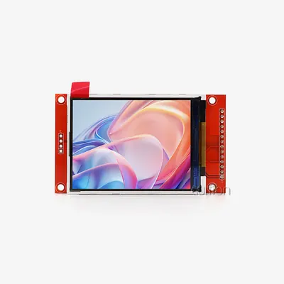
JC2432S028N2.8" 240x320 · none (bare display)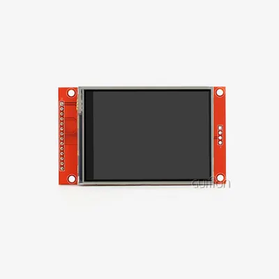
JC2432S028R2.8" 240x320 Resistive touch · none (bare display)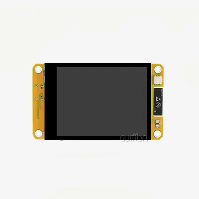
JC2432W328C2.8" 320x240 TN Capacitive touch · ESP32 · 4MB flash, - PSRAM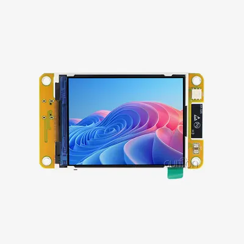
JC2432W328N2.8" 320x240 TN Resistive touch · ESP32 · 4MB flash, - PSRAM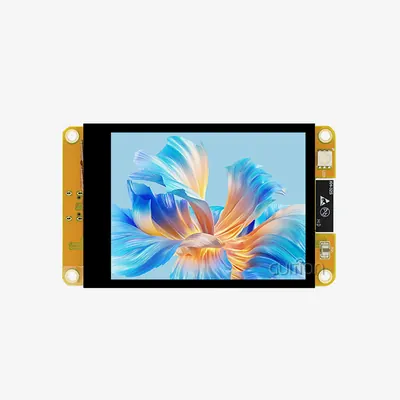
ESP32-2432S032C_I3.2" 240x320 IPS Capacitive touch · ESP32 · 4MB flash, - PSRAM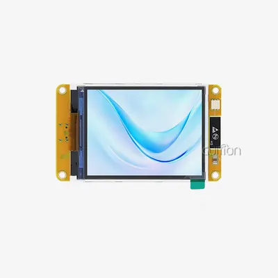
ESP32-2432S032N_I3.2" 240x320 IPS · ESP32 · 4MB flash, - PSRAM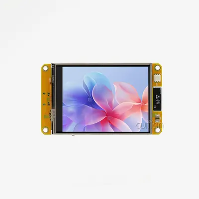
ESP32-2432S032R_I3.2" 240x320 IPS Resistive touch · ESP32 · 4MB flash, - PSRAM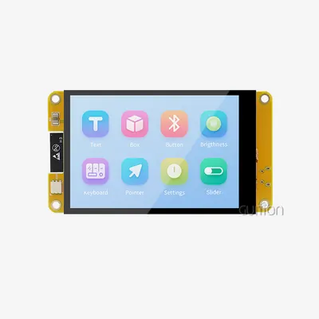
ESP32-3248S035C3.5" 320x480 TN Capacitive touch · ESP32 · 4MB flash, - PSRAM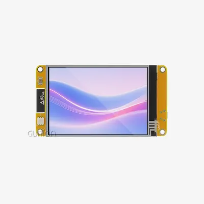
ESP32-3248S035R3.5" 320x480 TN Resistive touch · ESP32 · 4MB flash, - PSRAM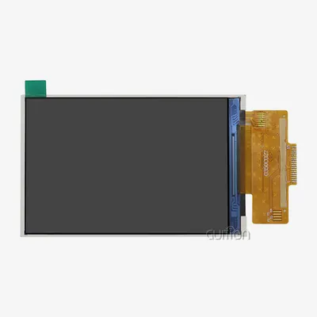
JC3248A035C3.5" 320x480 Capacitive touch · none (bare display)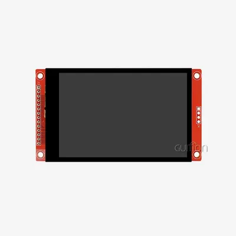
JC3248S035C3.5" 320x480 Capacitive touch · none (bare display)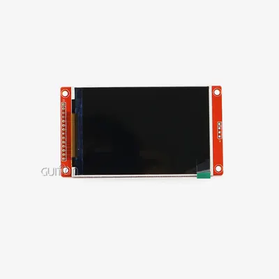
JC3248S035N3.5" 320x480 · none (bare display)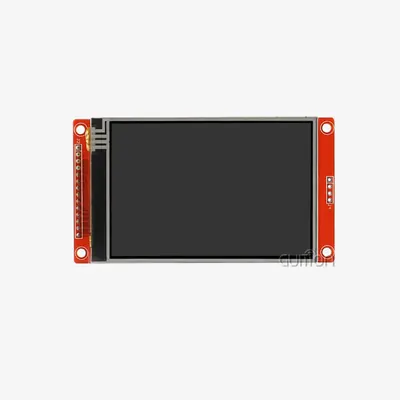
JC3248S035R3.5" 320x480 Resistive touch · none (bare display)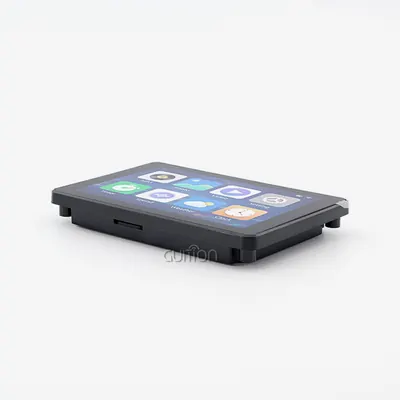
JC3248W535C_I_Y3.5" 320x480 IPS Capacitive touch · ESP32-S3 · 16MB flash, 8MB PSRAM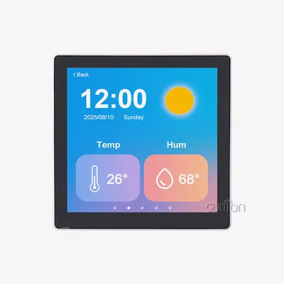
ESP32-4848S040C_I4" 480x480 IPS Capacitive touch · ESP32-S3 · 16MB flash, 8MB PSRAM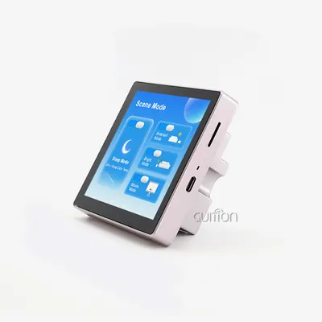
ESP32-4848S040C_I_Y_14" 480x480 IPS Capacitive touch · ESP32-S3 · 16MB flash, 8MB PSRAM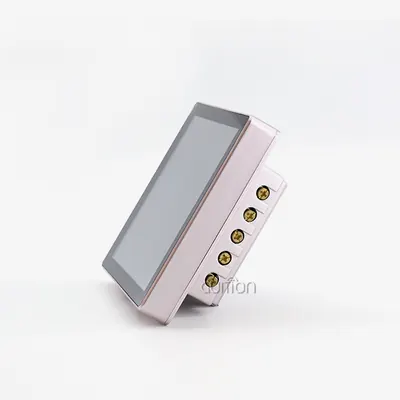
ESP32-4848S040C_I_Y_34" 480x480 IPS Capacitive touch · ESP32-S3 · 16MB flash, 8MB PSRAM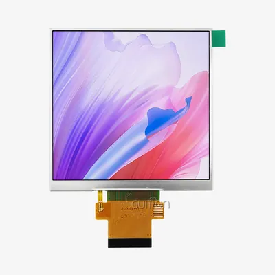
JC4848B040C_I4" 480x480 Capacitive touch · none (bare display)- 4.3inch_8080_Module_SSD19634.3" · none (bare display)
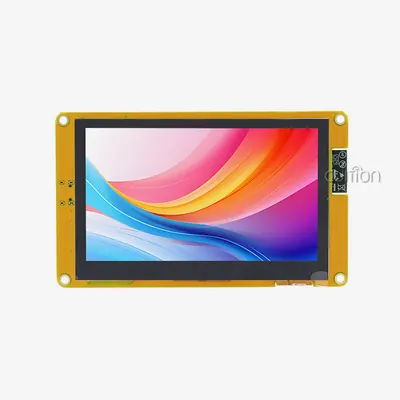
ESP32-4827S043C4.3" 480x272 IPS Capacitive touch · ESP32-S3 · 16MB flash, 8MB PSRAM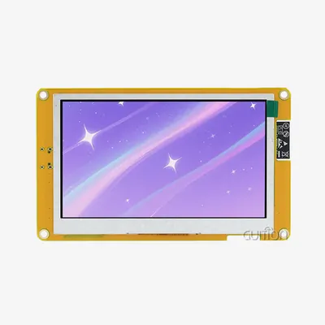
ESP32-4827S043N4.3" 480x272 TN · ESP32-S3 · 16MB flash, 8MB PSRAM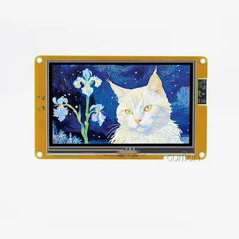
ESP32-4827S043R4.3" 480x272 TN Resistive touch · ESP32-S3 · 16MB flash, 8MB PSRAM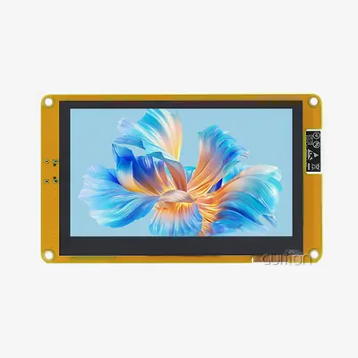
ESP32-8048S043C_I4.3" 800x480 IPS Capacitive touch · ESP32-S3 · 16MB flash, 8MB PSRAM- JC4827B043C4.3" 480x272 Capacitive touch · none (bare display)
- JC4827B043N4.3" 480x272 · none (bare display)
- JC4827B043R4.3" 480x272 Resistive touch · none (bare display)
- JC4827Q043N_I4.3" 800x480 · none (bare display)
- JC4827Q343C_I4.3" 480x272 IPS Capacitive touch · ArtInChip D12x · 16MB flash, 8MB PSRAM
- JC4827Q343N_I4.3" 480x272 IPS · ArtInChip D12x · 16MB flash, 8MB PSRAM
- JC4827W543C_I4.3" 480x272 IPS Resistive touch · ESP32-S3 · 4MB flash, 8MB PSRAM
- JC4827W543N_I4.3" 480x272 IPS · ESP32-S3 · 4MB flash, 8MB PSRAM
- JC4827W543R_I4.3" 480x272 IPS Resistive touch · ESP32-S3 · 4MB flash, 8MB PSRAM
- JC4880P443C_I_W4.3" 480x800 IPS Capacitive touch · ESP32-P4 · 16MB flash, 32MB PSRAM
- JC4880P443C_I_W_Y4.3" 480x800 IPS Capacitive touch · ESP32-P4 · 16MB flash, 32MB PSRAM
- JC8048B043C_I4.3" 800x480 Capacitive touch · none (bare display)
- JC8048B043N4.3" 800x480 · none (bare display)
- 5.0inch_8080_Module_SSD19635" · none (bare display)
- ESP32-8048S050C_I5" 800x480 IPS Capacitive touch · ESP32-S3 · 16MB flash, 8MB PSRAM
- ESP32-8048S050N_I5" 800x480 IPS · ESP32-S3 · 16MB flash, 8MB PSRAM
- JC8048B050C_I5" 800x480 Capacitive touch · none (bare display)
- JC8048B050N_I5" 800x480 · none (bare display)
- JC8048F550C_I_W_Y5" 800x480 IPS Capacitive touch · ESP32-S31 · 16MB flash, 16MB PSRAM
- JC8048Q350C_I5" 800x480 IPS Capacitive touch · ArtInChip D12x · 16MB flash, 8MB PSRAM
- JC8048Q350C_I_W5" 800x480 IPS Capacitive touch · ArtInChip D12x · 16MB flash, 8MB PSRAM
- JC8048Q350N_I5" 800x480 IPS · ArtInChip D12x · 16MB flash, 8MB PSRAM
- JC8048Q350N_I_W5" 800x480 IPS · ArtInChip D12x · 16MB flash, 8MB PSRAM
- JC8048W550C_I5" 800x480 IPS Capacitive touch · ESP32-S3 · 16MB flash, 8MB PSRAM
- JC8048W550N_I5" 800x480 IPS Capacitive touch · ESP32-S3 · 16MB flash, 8MB PSRAM
- 7.0inch_8080_Module_SSD19637" · none (bare display)
- ESP32-8048S070C7" 800x480 TN Capacitive touch · ESP32-S3 · 16MB flash, 8MB PSRAM
- ESP32-8048S070N7" 800x480 TN · ESP32-S3 · 16MB flash, 8MB PSRAM
- JC1060F570C_I_W7" 1024x600 IPS Capacitive touch · ESP32-S31 · 16MB flash, 16MB PSRAM
- JC1060F570C_I_W_Y7" 1024x600 IPS Capacitive touch · ESP32-S31 · 16MB flash, 16MB PSRAM
- JC1060M070C_I7" 800x480 Capacitive touch · none (bare display)
- JC1060M070N_I7" 800x480 · none (bare display)
- JC1060P470C_I_W7" 1024x600 IPS Capacitive touch · ESP32-P4 · 16MB flash, 32MB PSRAM
- JC1060P470C_I_W_Y7" 1024x600 IPS Capacitive touch · ESP32-P4 · 16MB flash, 32MB PSRAM
- JC1060Q370C_I7" 1024x600 IPS Capacitive touch · ArtInChip D12x · 16MB flash, 8MB PSRAM
- JC1060Q370N_I7" 1024x600 IPS · ArtInChip D12x · 16MB flash, 8MB PSRAM
- JC8048B070C7" 800x480 Capacitive touch · none (bare display)
- JC8048B070N7" 800x480 · none (bare display)
- JC8012P4A1C_I_W_Y10.1" 800x1280 IPS Capacitive touch · ESP32-P4 · 16MB flash, 32MB PSRAM
- JC8012P4A1C_I_W_Y110.1" 800x1280 IPS Capacitive touch · ESP32-P4 · 16MB flash, 32MB PSRAM
- JC-ESP32P4-M3-C6800x1280 · ESP32-P4 · 16MB flash, 32MB PSRAM
- JC-ESP32P4-M3-DEV800x1280 · ESP32-P4 · 16MB flash, 32MB PSRAM
- JC1216A018Nnone (bare display)
- JC2424W513
- JC2432A024Nnone (bare display)
- JC2432A028Nnone (bare display)